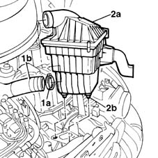
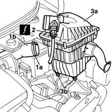
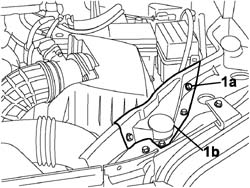
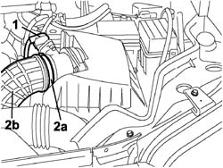
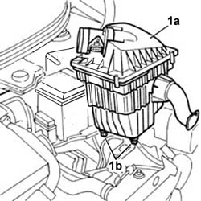
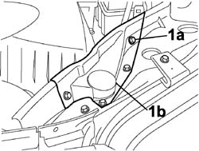

1048A10 AIR CLEANER FILTERING ELEMENT - REPLACE
- Path
- Procedures > 10 ENGINE UNIT > 1048 ENGINE AIR SUPPLY CIRCUIT > 1048A VACUUM AIR CIRCUIT > 1048A10 AIR CLEANER FILTERING ELEMENT - REPLACE
- Kind
- repair procedure (removal / refitting; the operation number is the code)
- Applies to
- all engines; all production periods
- Interactive page
- https://sloeber94.github.io/elrnDB-fMltpl/en/#/2891253
Applies to: engines: 1.6 16v; production: fino a 05/04
 Removing
Removing
 Refitting
RefittingOpen the bonnet lid.
1. Remove the band (1a) and disconnect the pipe (1b) connected to the throttle casing.
2. Lift the air filter casing (2a) upwards releasing the rubber pins (2b) from the mounting bracket.

Applies to: engines: 1.6 16v; production: fino a 05/04
Refitting
RemovingCheck that the filter casing is not damaged.
Position the filter casing and attach the rubber pins in the housings.
Check that the pins are correctly inserted.
Connect the air pipe using a new band.
Close the bonnet.
Applies to: engines: 1.9 JTD 8V; production: fino a 05/04
Removing
RefittingOpen the bonnet lid
1. Remove the band (1a) and disconnect the pipe (1b) connected to the throttle casing.
2. Disconnect the electrical connection for the air flow meter.
Description | Connector | |
|---|---|---|
2 | Air flow meter |
3. Lift the air filter casing (3a) upwards releasing the rubber pins (3b) from the mounting bracket.

Applies to: engines: 1.9 JTD 8V; production: fino a 05/04
Refitting
RemovingCheck that the filter casing is not damaged.
Position the filter casing and attach the rubber pins in the housings.
Check that the pins are correctly inserted
Connect the air pipe using a new band.
Connect the electrical connection for the air flow meter.
Close the bonnet.
Applies to: engines: 1.9 JTD 8V; production: da 06/04; only with equipment: Euro 3
Removing
RefittingOpen the bonnet lid.
1. Undo the fixing bolts (1a) and remove the reinforcement (1b).

Applies to: engines: 1.9 JTD 8V; production: da 06/04; only with equipment: Euro 3
1. Disconnect the electrical connection for the air flow meter.
Description | Connector | |
|---|---|---|
1 | Air flow meter |
2. Remove the band (2a) and disconnect the pipe (2b) connected to the throttle casing.

Applies to: engines: 1.9 JTD 8V; production: da 06/04; only with equipment: Euro 3
1. Lift the air filter casing (1a) upwards releasing the rubber pins (1b) from the mounting bracket.

Applies to: engines: 1.9 JTD 8V; production: da 06/04; only with equipment: Euro 3
Refitting
RemovingCheck that the filter casing is not damaged.
Position the filter casing and engage the rubber pins in the housings.
Check that the pins are correctly inserted
Connect the air pipe using a new band.
Connect the electrical connection for the air flow meter.
Position the reinforcement and tighten the fixing bolts.
Close the bonnet.
Applies to: engines: 1.6 16v; production: da 06/04
Removing
RefittingOpen the bonnet lid.
1. Undo the fixing bolts (1a) and remove the reinforcement (1b).

Applies to: engines: 1.6 16v; production: da 06/04
1. Remove the band (1a) and disconnect the pipe (1b) connected to the throttle casing.
2. Lift the air filter casing (2a) upwards releasing the rubber pins (2b) from the mounting bracket.

Applies to: engines: 1.6 16v; production: da 06/04
Refitting
RemovingCheck that the filter casing is not damaged.
Position the filter casing and engage the rubber pins in the housings.
Check that the pins are correctly inserted.
Connect the air pipe using a new band.
Position the reinforcement and tighten the fixing bolts.
Close the bonnet.
Topics linked from this page (1)
Topics that link to this page (73)
- 1004B10 power unit with manual gearbox - r + r
- 1004B12 power unit with manual gearbox - r+r for versions with a/c
- 1016C10 cylinder head - r + r and replace gasket
- 1016C11 single cylinder head-r r gasket for versions with air conditioner
- 1020D26 flywheel side oil seal cover - r+r
- 1020D38 flywheel side oil seal - replace
- 1024B10 engine flywheel - r + r for versions with manual gearbox
- 1028H10 connecting rod and piston set - r r
- 1028H11 piston connecting rod set - r r
- 1028H20 piston with connecting rod - r r
- 1048A41 sleeve from debimeter to turbocharger - r r
- 1048B22 air delivery sleeve from heat exchanger to intake manifold - r + r
- 1056B60 single fuel manifold pipe, with injectors - r + r
- 1060F30 fuel delivery manifold - r r
- 1060F36 lines to injectors - r r
- 1060G10 flow meter - r r
- 1060G14 engine coolant temperature sensor - r r
- 1060G90 diesel injection wiring harness - r r
- 1064A28 SOLENOID VALVE FOR TURBOCHARGER VANE ACTUATOR - R.R.
- 1072B10 inlet manifold - r + r and replace seal
- 1072B50 sleeves connecting air capacity box to inlet manifold is - r+r
- 1080D10 pipe carrying engine oil vapours from intake to separator - r + r
- 1080D14 pipe from engine oil vapour separator to intake - r + r
- 1080D30 engine oil recovery pipe - r + r
- 1080D34 engine oil vapour separator - r + r
- 1088C40 thermostat- r + r
- 1088D10 lower sleeve for coolant outlet from radiator - r + r
- 1088D23 sleeve from thermostat to rigid pipe carrying fluid to pump - r r
- 1088D24 rigid pipe for coolant inlet to water pump - r + r
- 1088E10 radiator cooling fan - r + r
- 1810A20 clutch - r + r
- 1820A14 clutch pedal - adjust travel
- 1820A20 release cable - r + r
- 1820A24 thrust bearing linkage - r + r
- 1280B30 OPERATING CYLINDER/CLUTCH HYDRAULIC ACTUATOR - R.R.
- 1280B45 RIGID supply PIPE from (pump) - master cylinder R.R. for right hand drive versions
- 1820B08 Clutch release HYDRAULIC SYSTEM - Bleeding air and restoring level
- 2110A10 manual gearbox and differential - r + r
- 2125C30 gear engagement cable - r r
- 2710A34 intermediate drive shaft bearing support - r + r with intermediate drive shaft removed for versions with air conditioner
- 2710A35 intermediate drive shaft mount - r r
- 3330C10 (PUMP) - MASTER CYLINDER R.R.
- 3330C14 (PUMP) - MASTER CYLINDER .R.R for versions with A.B.S.
- 3330D10 brake servo - r+r - includes separation from master cylinder (pump)
- 3330D14 brake servo - r+r for versions with abs - includes separation from master cylinder (pump)
- 3330D22 intermediate one-way valve for brake servo - r r
- 3340A12 A'B.S. system. - electronic and hydraulic CONTROL UNIT R.R.
- 3340A13 abs central mount - r r
- 3340A32 front wheel rpm sensors (two) - r r
- 3340A48 wheel rpm sensors (four) - r r
- 4130B21 power steering pump r r with interfering parts removed
- 4130B24 power steering pump r r for versions with air conditioner
- 4130B34 supply pipe from fluid resevior to power steering pump r r
- 5010A12 engine/heater line - r r
- 5010A16 heater/engine line - r r
- 5020A10 heater box - r+r
- 5020A12 HEATER CASING - R+R WITH FACIA REMOVED
- 5040A44 air conditioner dehydrating filter/accumulator - r+r
- 5040A52 pipe from condenser to dehydrating filter - r+r
- 5040A54 pipe from dehydrating filter to expansion valve - r+r
- 5040A58 pipe from expansion valve to compressor - r+r
- 5040B30 expansion valve (tube orifice) - r+r
- 5040B64 sensor on evaporator for a/c ecu - r + r
- 5040C10 air conditioner box - r+r
- 5040C12 air conditioner housing - r r with facia disconnected
- 5040C64 a/c evaporator - r+r
- 5505A38 power unit/body earth wire - r+r
- 5520C10 glow plugs - r+r
- 5530A14 alternator - r+r for versions with air conditioner
- 5530B22 battery earth lead - r+r
- 5530B26 lead between battery and starter motor - r+r
- 5530B52 Battery DRIP TRAY/SUPPORT - R.R.
- 5580E46 ANTITHEFT DEVICE ECU / SIREN UNIT R + R